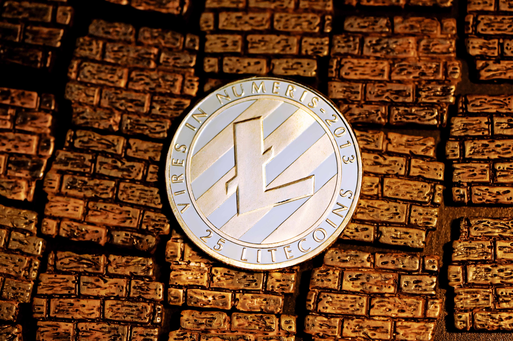
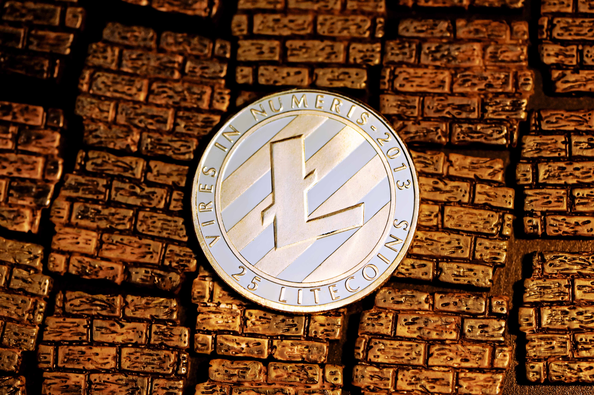
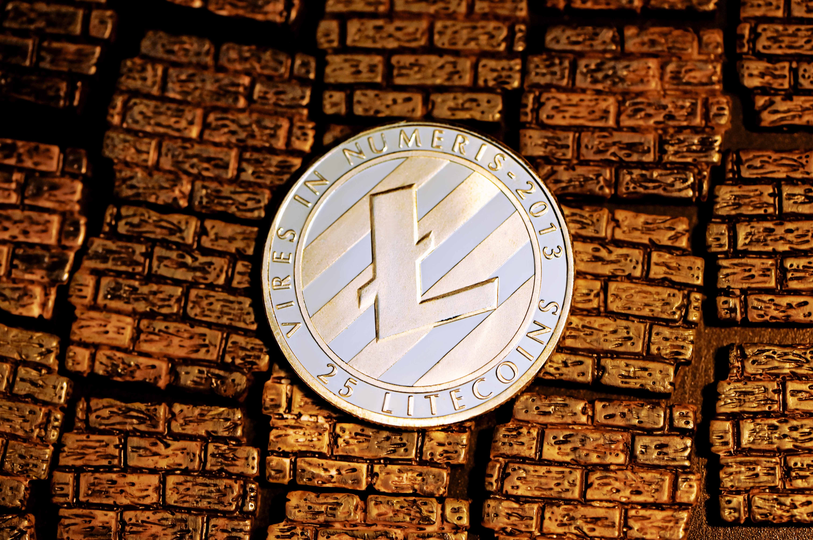
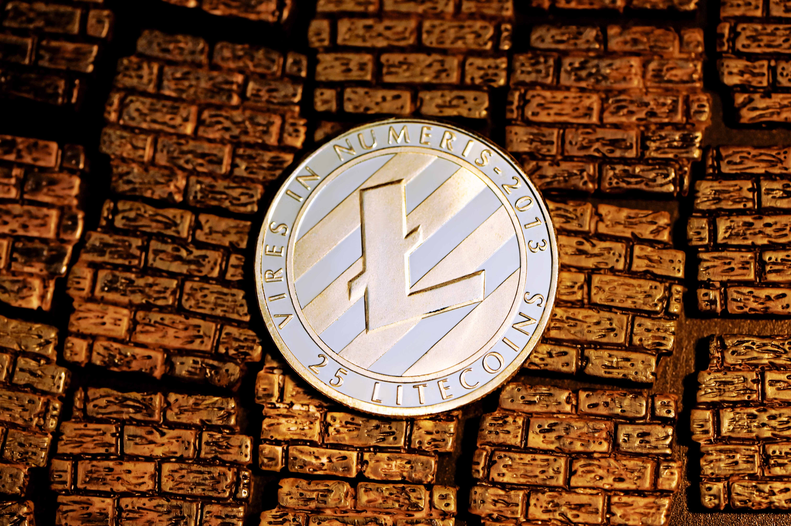

Litecoin (LTC or Ł) is a peer-to-peer cryptocurrency and open-source software project released under the MIT/X11 license. Litecoin was an early bitcoin spinoff or altcoin, starting in October 2011.[3] In technical details, Litecoin is nearly identical to Bitcoin. By 2011, Bitcoin mining was largely performed by GPUs. This raised concern in some users that mining now had a high barrier to entry, and that CPU resources were becoming obsolete and worthless for mining. Using code from Bitcoin, a new alternative currency was created called Tenebrix (TBX). Tenebrix replaced the SHA-256 rounds in Bitcoin's mining algorithm with the scrypt function,[4] which had been specifically designed in 2009 to be expensive to accelerate with FPGA or ASIC chips.[5] This would allow Tenebrix to have been "GPU-resistant", and utilize the available CPU resources from bitcoin miners. Tenebrix itself was a successor project to an earlier cryptocurrency which replaced Bitcoin's issuance schedule with a constant block reward (thus creating an unlimited money supply).[4] However, the developers included a clause in the code that would allow them to claim 7.7 million TBX for themselves at no cost, which was criticized by users.[6] To address this, Charlie Lee, a Google employee who would later become engineering director at Coinbase,[7] created an alternative version of Tenebrix called Fairbrix (FBX).[3] Litecoin inherits the scrypt mining algorithm from Fairbrix, but returns to the limited money supply of Bitcoin, with other changes.
Source: Wikipedia Litecoin LTC